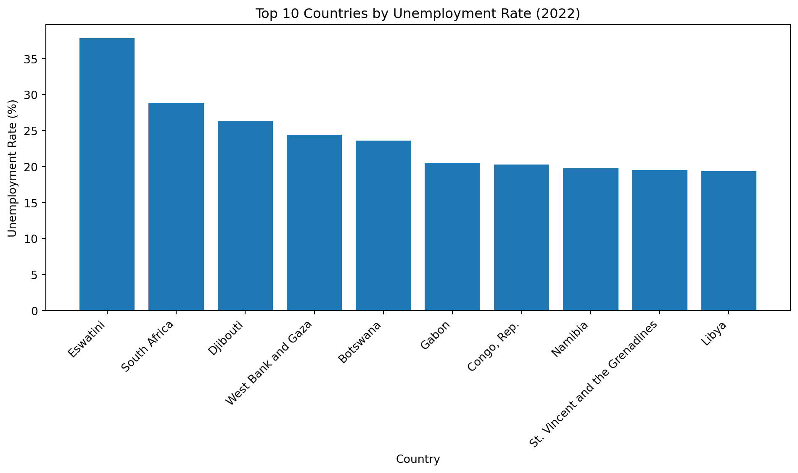

| country | inflation_rate | exports_gdp_share | gdp_growth_rate | gdp_per_capita | adult_literacy_rate | primary_school_enrolment_rate | education_expenditure_gdp_share | measles_immunisation_rate | health_expenditure_gdp_share | income_inequality | unemployment_rate | life_expectancy | total_population | |
|---|---|---|---|---|---|---|---|---|---|---|---|---|---|---|
| 0 | Afghanistan | NaN | 18.380042 | -6.240172 | 352.603733 | NaN | NaN | NaN | 68.0 | NaN | NaN | 14.100 | 62.879 | 41128771.0 |
| 1 | Albania | 6.725203 | 37.395422 | 4.856402 | 6810.114041 | 98.5 | 95.606712 | 2.74931 | 86.0 | NaN | NaN | 11.588 | 76.833 | 2777689.0 |
| 2 | Algeria | 9.265516 | 31.446856 | 3.600000 | 5023.252932 | NaN | 108.343933 | NaN | 79.0 | NaN | NaN | 12.437 | 77.129 | 44903225.0 |
| 3 | American Samoa | NaN | 46.957520 | 1.735016 | 19673.390102 | NaN | NaN | NaN | NaN | NaN | NaN | NaN | NaN | 44273.0 |
| 4 | Andorra | NaN | NaN | 9.563798 | 42350.697069 | NaN | 90.147346 | 2.66623 | 98.0 | NaN | NaN | NaN | NaN | 79824.0 |
World Development Indicators (2022) – Analysis
0.1 Overview
One-page, reproducible WDI snapshot for 2022 using simple EDA and plots. Data are sourced from the World Bank’s World Development Indicators (The World Bank 2024).
This report is generated with Quarto to ensure reproducibility (Posit, PBC 2025).
0.2 Data Loading
Read the provided CSV and quickly inspect the first rows.
0.3 Exploratory Data Analysis
Structure, summary stats, and missingness check for basic data health.
# Exploratory Data Analysis (EDA)
wdi.info()
wdi.describe()
wdi.isna().sum()<class 'pandas.core.frame.DataFrame'>
RangeIndex: 217 entries, 0 to 216
Data columns (total 14 columns):
# Column Non-Null Count Dtype
--- ------ -------------- -----
0 country 217 non-null object
1 inflation_rate 169 non-null float64
2 exports_gdp_share 169 non-null float64
3 gdp_growth_rate 202 non-null float64
4 gdp_per_capita 203 non-null float64
5 adult_literacy_rate 49 non-null float64
6 primary_school_enrolment_rate 114 non-null float64
7 education_expenditure_gdp_share 105 non-null float64
8 measles_immunisation_rate 193 non-null float64
9 health_expenditure_gdp_share 20 non-null float64
10 income_inequality 28 non-null float64
11 unemployment_rate 186 non-null float64
12 life_expectancy 209 non-null float64
13 total_population 217 non-null float64
dtypes: float64(13), object(1)
memory usage: 23.9+ KBcountry 0
inflation_rate 48
exports_gdp_share 48
gdp_growth_rate 15
gdp_per_capita 14
adult_literacy_rate 168
primary_school_enrolment_rate 103
education_expenditure_gdp_share 112
measles_immunisation_rate 24
health_expenditure_gdp_share 197
income_inequality 189
unemployment_rate 31
life_expectancy 8
total_population 0
dtype: int640.4 Summary of Findings from EDA
- The dataset contains 217 observations across 14 indicators for various countries in 2022.
- Some indicators, such as Adult Literacy Rate and Life Expectancy, have many missing values, while variables like GDP per Capita and Inflation Rate are more complete.
- The numerical summary shows large variation in GDP per capita and unemployment rates, suggesting strong economic diversity across countries.
- We will focus our visual analysis on three indicators: GDP per capita, Life Expectancy, and Unemployment Rate, as they reflect key aspects of economic well-being, health, and labor outcomes.
0.5 GDP per Capita vs Life Expectancy
- Clear positive, diminishing-returns pattern: big life-expectancy gains at lower incomes that taper off as GDP per capita rises.
- A few outliers deviate from the curve, but overall the association is tight—suggesting income is a strong correlate of longevity in 2022.
0.6 Top 10 Countries by Unemployment Rate

- Unemployment is highly concentrated in a small set of countries (≈20–38%), indicating substantial labor-market stress at the top of the distribution.
- Country rankings highlight regional and structural differences; policy context matters when comparing rates across economies.
0.7 Key Statistics Table
| mean | min | max | |
|---|---|---|---|
| gdp_per_capita | 20345.71 | 259.03 | 240862.18 |
| life_expectancy | 72.42 | 53.00 | 85.38 |
| unemployment_rate | 7.27 | 0.13 | 37.85 |
0.8 Discussion & Cross-References
As shown in Figure 1, countries with higher GDP per capita tend to have longer life expectancy, reflecting the positive relationship between income and health outcomes.
Meanwhile, Figure 2 displays the ten countries with the highest unemployment rates in 2022, revealing wide differences in labor market conditions.
Finally, Table 1 summarizes the main indicators used in this analysis.
References
Posit, PBC. 2025. “Quarto Documentation.” https://quarto.org/docs/.
The World Bank. 2024. “World Development Indicators.” https://data.worldbank.org/products/wdi.